Yayın takvimi
| Gün | İçerik | Tür |
|---|---|---|
| Gün 1 · 1 Kas Pazar | T1 · Uydudan Düş 01 — kyoto | Video (Reels + TikTok) |
| Gün 2 · 2 Kas Pazartesi | I1 · Gitmeden Önce Bil — Pamukkale (carousel) | Carousel (IG + TikTok fotoğraf modu) |
| Gün 3 · 3 Kas Salı | D1 · İndirmeden Aç | Video (Reels + TikTok) · 10 sn ekran kaydı |
| Gün 4 · 4 Kas Çarşamba | D2 · Sor, Rota Gelsin — Göreme'de 1 gün | Video (Reels + TikTok) |
| Gün 5 · 5 Kas Perşembe | I2 · Aynı Şehir, 3 Zaman — Efes (carousel) | Carousel (IG + TikTok fotoğraf modu) |
| Gün 6 · 6 Kas Cuma | T2 · Nereye Gidelim Kavgası | Video (Reels + TikTok) |
| Gün 7 · 7 Kas Cumartesi | U1 · 1 İz Bırak — meydan okuma | Video (Reels + TikTok) + UGC çağrısı |
| Gün 8 · 8 Kas Pazar | T3 · Evinden 15 Dakika — Galata & Haliç | Video (Reels + TikTok) |
| Gün 9 · 9 Kas Pazartesi | I3 · Altın Saate Yetiş — Pamukkale | Video (Reels + TikTok) |
| Gün 10 · 10 Kas Salı | U2 · 24 Saat İzi — Venedik Cannaregio | Video (Reels + TikTok) + Story devamı |
Not: mevcut yürüyüş videoları kuyruğu (kyoto/Göreme/Venedik/Pamukkale) 31 Ekim'de bitiyor; bu paket çakışmadan devam eder.
Uydudan Düş 01 — kyoto
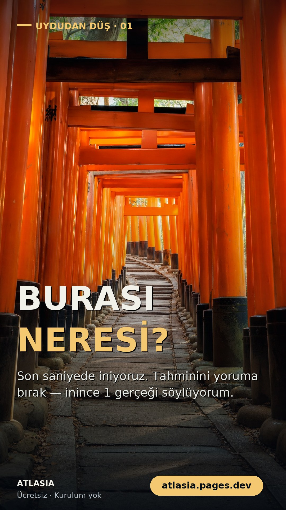
Kısa senaryo
Küre döner → uyduyla Fushimi İnari'ye iniş (son 2 sn yavaşla) → pin açılır: '10.000 kapı var' → kapanış: rotası profilde.
TikTok açıklaması
kyoto'da kalabalığın bittiği yeri bulduk 👀 Fushimi İnari'de 10.000 kapı var ama herkes ilk 200 metrede kalıyor. 30 dakika yukarı çık: kalabalık bitiyor, kyoto ayağının altında. İnmeden önce tahminin neydi? Yoruma yaz 👇 sıradaki iniş nereye olsun? #kyoto #fushimiinari #japonya #gezi #atlasia #200metre
Instagram açıklaması
10.000 kapı var. Herkes aynı 200 metrede kalıyor. ⛩️ Uydudan indik: Fushimi İnari, kyoto. Asıl sır aşağıda değil — 30 dakika yukarı çıkınca kalabalık bitiyor, şehir ayağının altına seriliyor. 🚶 Rotası (durak durak, saatiyle) profildeki linkte. Uygulama indirmiyorsun, üyelik açmıyorsun — harita direkt açılıyor. Sen olsan yukarı kadar çıkar mıydın, ilk kapılarda döner miydin? 👇
Hashtag (IG ilk yorum)
#kyoto #fushimiinari #japonya #japantravel #gezi #seyahat #gezgin #keşfet #atlasia #200metre #uydudandüş #travelgram
Sabit yorum · Story
Yorum: Doğru tahmin edenleri sabitliyoruz 📌 Sıradaki iniş için şehir önerin, en çok istenene iniyoruz.
Story: Yeni iniş yayında 🛰️ Burası neresiydi, bildin mi? (anket: Bildim / Sonda anladım)
Bağlantılar (UTM)
IG: https://atlasia.pages.dev/?tab=kesfet&utm_source=instagram&utm_medium=reels&utm_campaign=uydudan-dus&utm_content=kyoto-01
TT: https://atlasia.pages.dev/?tab=kesfet&utm_source=tiktok&utm_medium=video&utm_campaign=uydudan-dus&utm_content=kyoto-01
Gitmeden Önce Bil — Pamukkale (carousel)
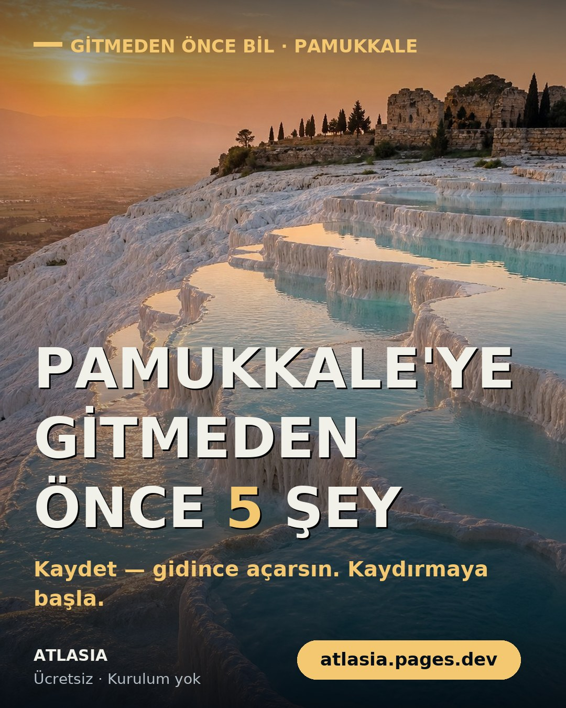
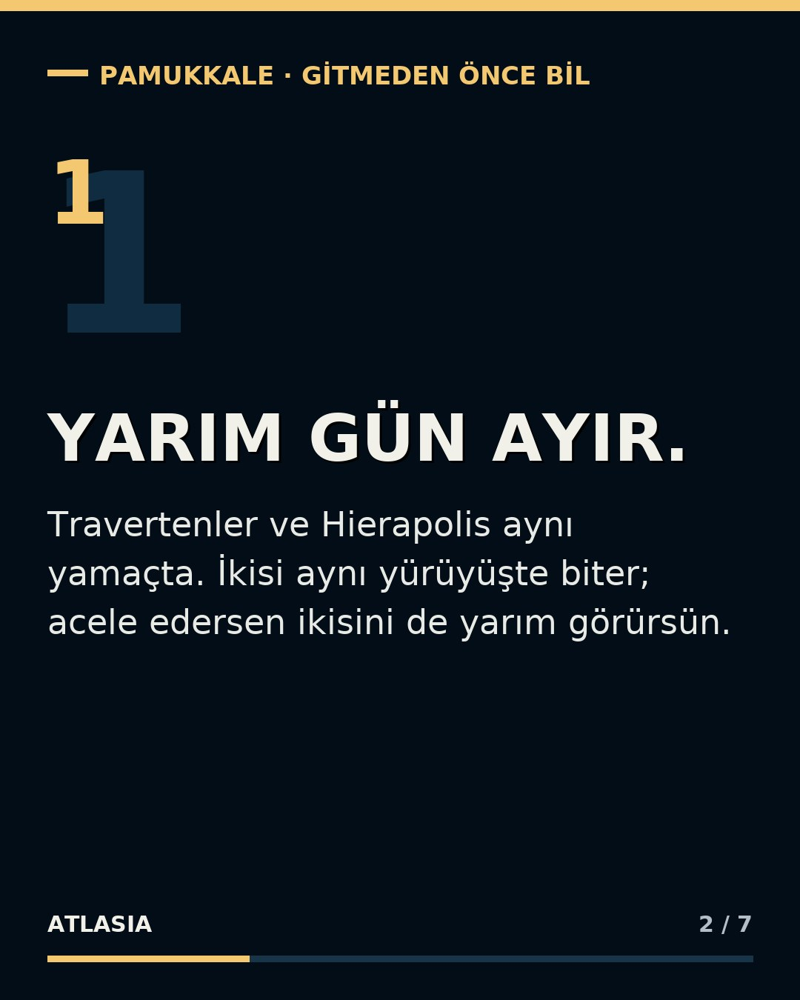
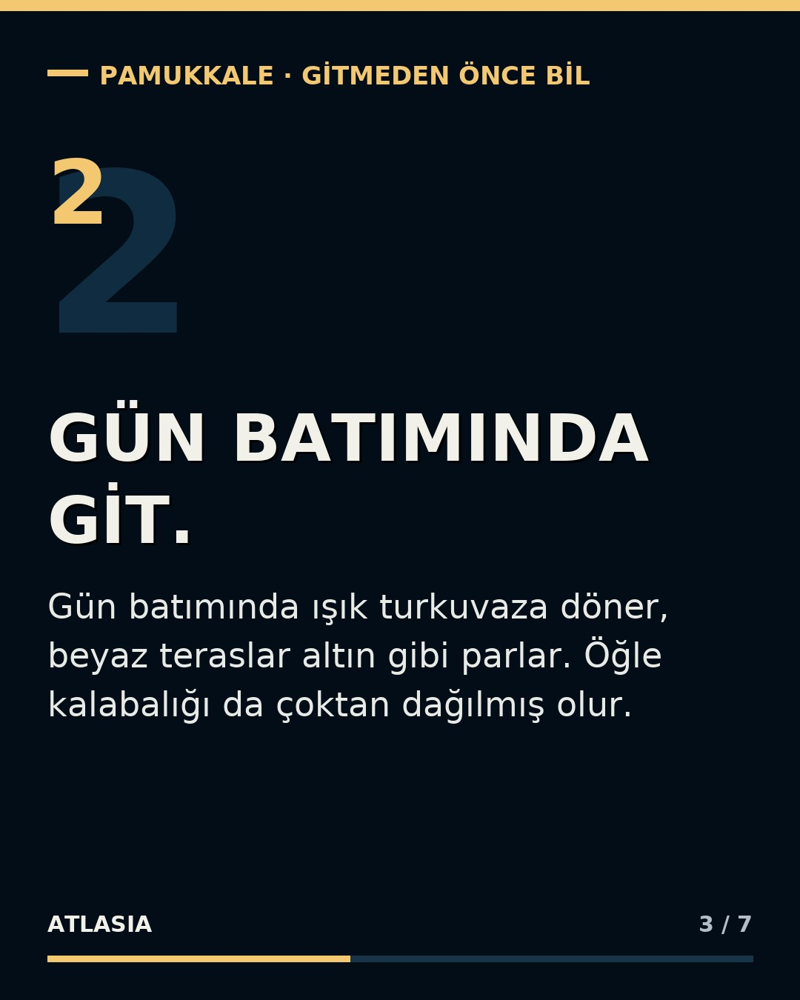
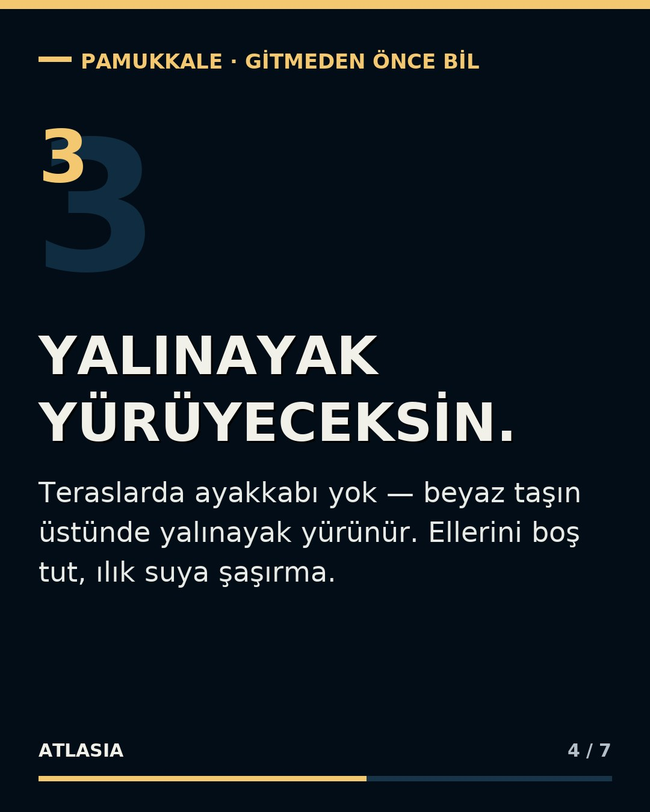
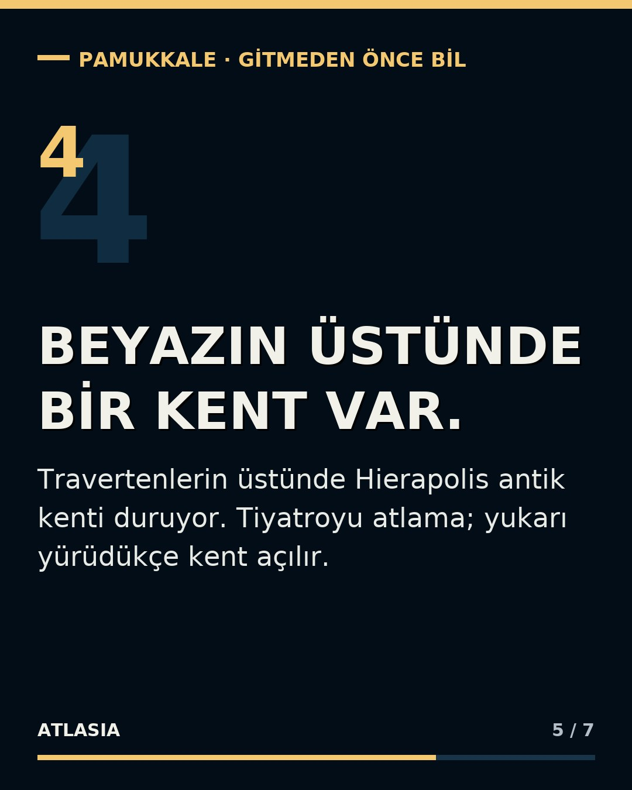
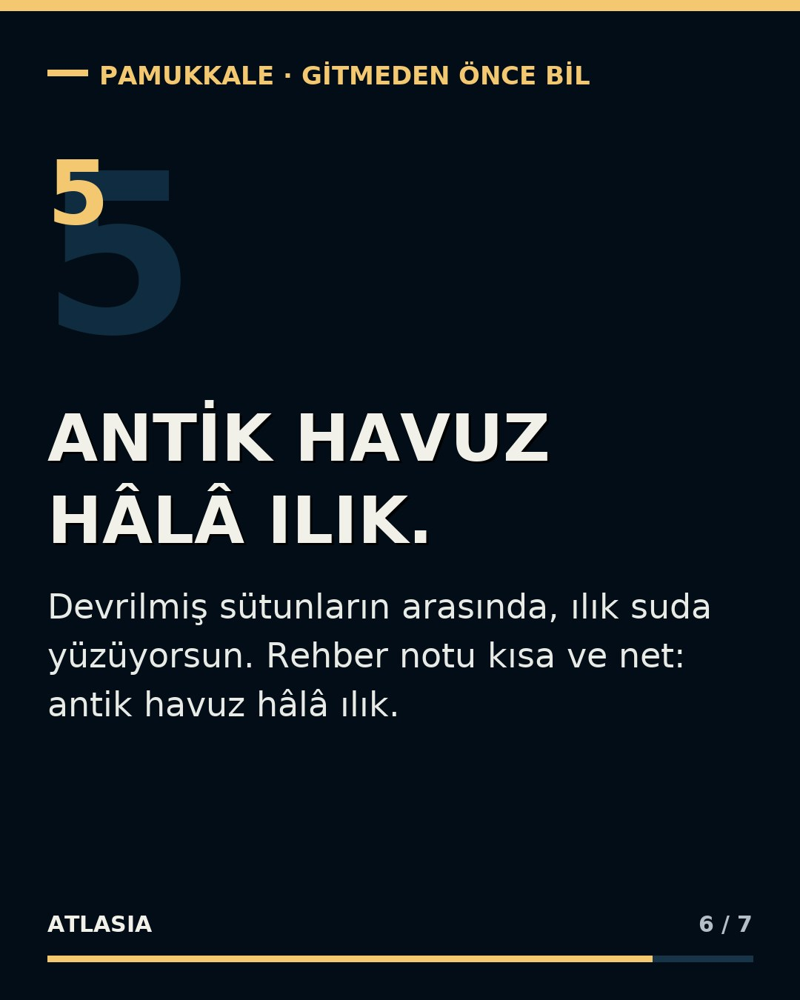
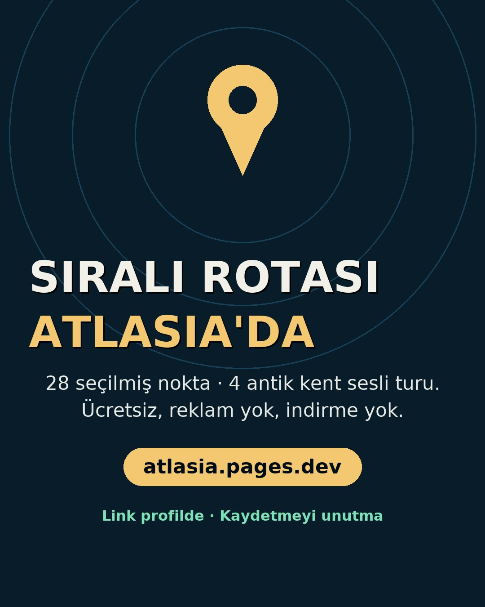
Kısa senaryo
7 slayt: kapak + 5 ipucu + CTA. TikTok'ta fotoğraf moduyla aynı görseller, ilk görsele uygulama içi yazıyla 'kaydır' ekle.
TikTok açıklaması
Pamukkale'ye gitmeden önce bilmen gereken 5 şey (kaydet, gidince açarsın) 📌 1) Yarım gün ayır — Hierapolis aynı yamaçta 2) Gün batımında git — ışık turkuvaza döner 3) Yalınayak yürüyeceksin 4) Beyazın üstünde bir kent var 5) Antik havuz hâlâ ılık Sıralı rotası profilde. Gidenler: sizin 1 numaranız ne? 👇 #pamukkale #denizli #hierapolis #gezi #atlasia #seyahat
Instagram açıklaması
Pamukkale'ye gitmeden önce bil: 5 şey 🤍 Kaydet — gidince açarsın. Beyaz görünüyor ama hikâye beyazda değil; üstündeki antik kentte, ışıkta ve saatinde. Slaytlarda hepsi var: kaç saat, hangi ışık, neden yalınayak, antik havuz gerçeği. 🗺️ Sıralı yürüyüş rotası profildeki linkte — indirme yok, harita direkt açılıyor. Birlikte gideceğin kişiye gönder, plan sizden önce hazır olsun ✈️
Hashtag (IG ilk yorum)
#pamukkale #hierapolis #denizli #türkiye #gezi #seyahat #gezilecekyerler #antikkent #keşfet #atlasia #200metre #travelturkey
Sabit yorum · Story
Yorum: Sizden gelen en iyi Pamukkale ipucunu yarın story'de paylaşıyoruz. Yazın 👇
Story: Pamukkale kartları yayında 🤍 Kaydet, gidince beni hatırla (link çıkartması)
Bağlantılar (UTM)
IG: https://atlasia.pages.dev/?tab=kesfet&utm_source=instagram&utm_medium=carousel&utm_campaign=gitmeden-once-bil&utm_content=pamukkale
TT: https://atlasia.pages.dev/?tab=kesfet&utm_source=tiktok&utm_medium=photo&utm_campaign=gitmeden-once-bil&utm_content=pamukkale
İndirmeden Aç
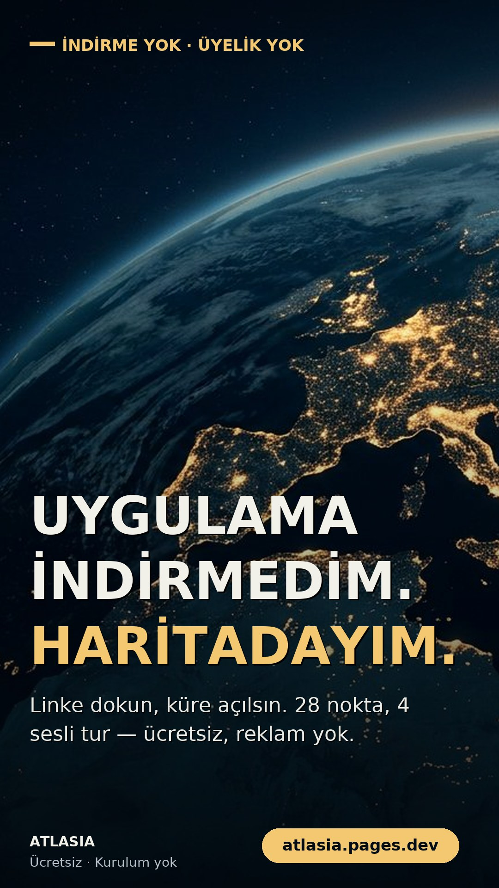
Kısa senaryo
Bio linkine dokun → küre açılır (misafir modu) → 3 saat + yürüyorum + tarih → rota çizilir. Hepsi gerçek ekran kaydı, hızlandırma yok hissi için 1,25x.
TikTok açıklaması
Uygulama indirmedim. Üyelik açmadım. Haritadayım. 🌍 Atlasia: linke dokun, küre açılsın. 28 seçilmiş nokta, 4 antik kent sesli turu — ücretsiz, reklam yok. Deneyip kaç saniyede açıldığını yoruma yaz ⏱️ #gezi #harita #seyahat #atlasia #rota #kesfet
Instagram açıklaması
İndirmeden açılan harita gördün mü? 🌍 Dokun → küre açılıyor → zamanını seçiyorsun → rotan hazır. Uygulama yok, üyelik yok, reklam yok. Misafir gibi gir, gezgin gibi gez. 28 seçilmiş nokta · 4 antik kent sesli turu · varış saatinde hava durumu Link profilde. Açılış süreni ölçüp yoruma bırak ⏱️ rekabet başlasın 👇
Hashtag (IG ilk yorum)
#atlasia #gezi #seyahat #harita #rota #gezgin #keşfet #seyahatönerisi #dünyayıkeşfet #travelturkey #200metre #ücretsiz
Sabit yorum · Story
Yorum: En hızlı açılışı yapanı sabitliyoruz 📌 (cihazını da yaz, dürüst olalım)
Story: 10 saniyelik meydan okuma ⏱️ Linke dokun, harita kaç saniyede açılıyor? (link çıkartması)
Bağlantılar (UTM)
IG: https://atlasia.pages.dev/?tab=kesfet&utm_source=instagram&utm_medium=reels&utm_campaign=indirmeden-ac&utm_content=globe
TT: https://atlasia.pages.dev/?tab=kesfet&utm_source=tiktok&utm_medium=video&utm_campaign=indirmeden-ac&utm_content=globe
Sor, Rota Gelsin — Göreme'de 1 gün
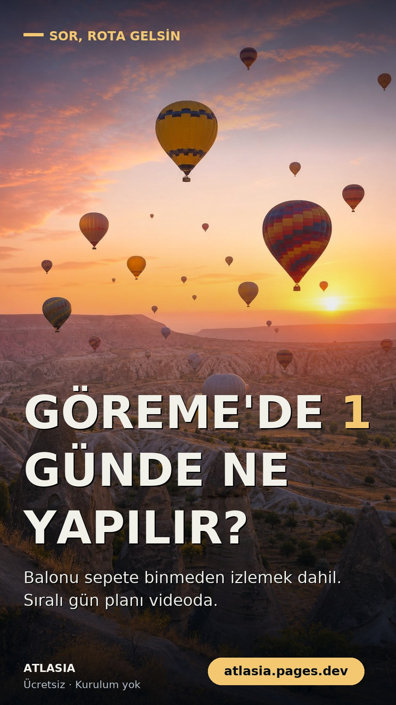
Kısa senaryo
Soru kadrajda yazar → harita üstünde gün planı saniye saniye akar: gün doğumu Aşk Vadisi sırtı → müze/vadi → gün batımı. Soru cümlesini videoda sesli de söyle (arama için).
TikTok açıklaması
Göreme'de 1 günde ne yapılır? 🎈 (sepete binmeden plan) Herkes 05.30'da kalkıp sepete biniyor; Aşk Vadisi sırtından aynı gökyüzü bedava izleniyor. Sonra vadi, sonra gün batımı — sıra videoda, rotası profilde. Kapadokya'ya gidenler: 1 güne ne eklerdiniz? 👇 #kapadokya #goreme #cappadocia #gezi #atlasia #travelturkey
Instagram açıklaması
Göreme'de 1 günün var. Plan hazır 🎈 Gün doğumunda balonları Aşk Vadisi sırtından izle — araba yok, kalabalık yok, aynı gökyüzü. Sonra vadiler, sonra ışık yumuşarken son durak. Sıralı hâli videoda, haritalı hâli profildeki linkte. Kaydet: Kapadokya bileti alınca ilk bu açılacak 📌 Sen sepete biner miydin, sırttan mı izlerdin? 👇
Hashtag (IG ilk yorum)
#kapadokya #goreme #cappadocia #balon #peribacaları #gezi #seyahat #gezilecekyerler #keşfet #atlasia #200metre #travelturkey
Sabit yorum · Story
Yorum: Sepet ekibi mi sırt ekibi mi? Tarafını seç 👇 kaybeden ekip bir sonraki videoda kendini savunsun
Story: Sepete binmek mi, sırttan izlemek mi? 🎈 (anket) — Göreme planı yayında
Bağlantılar (UTM)
IG: https://atlasia.pages.dev/?tab=kesfet&utm_source=instagram&utm_medium=reels&utm_campaign=sor-rota-gelsin&utm_content=goreme-1gun
TT: https://atlasia.pages.dev/?tab=kesfet&utm_source=tiktok&utm_medium=video&utm_campaign=sor-rota-gelsin&utm_content=goreme-1gun
Aynı Şehir, 3 Zaman — Efes (carousel)
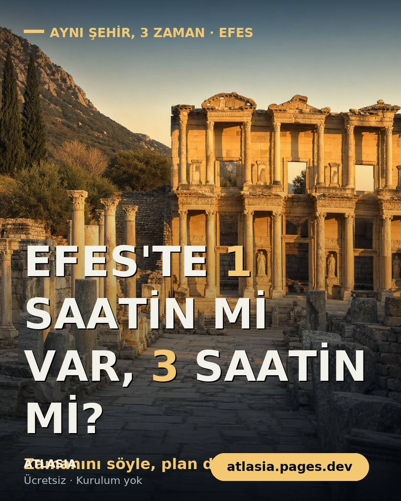
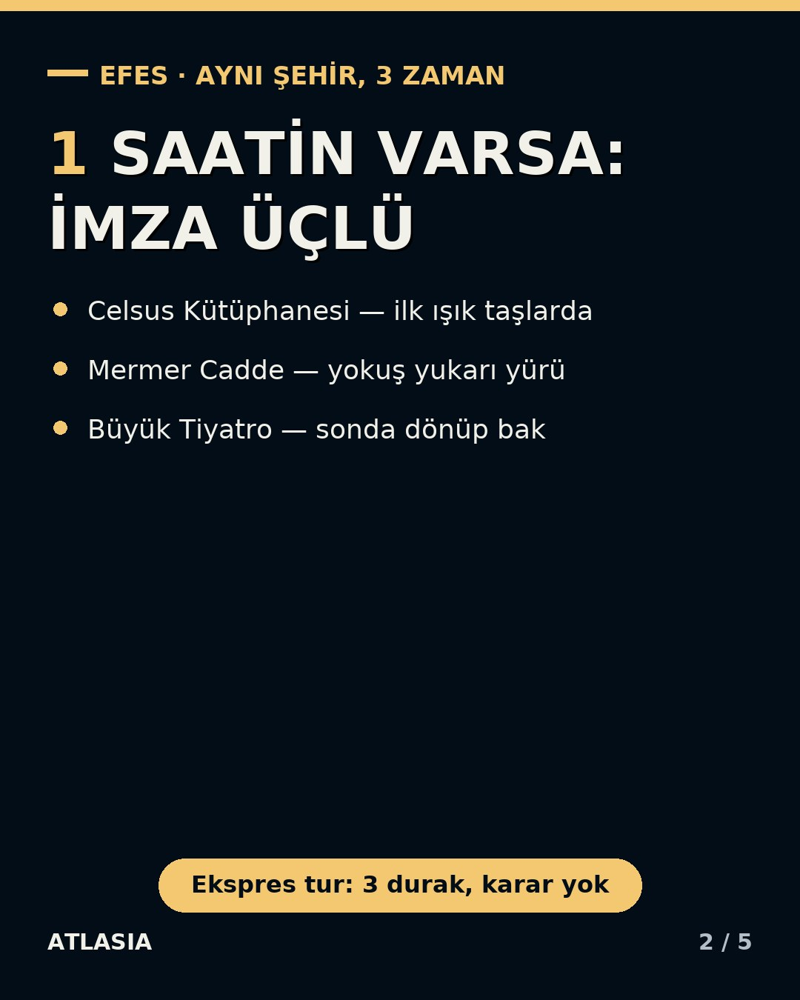
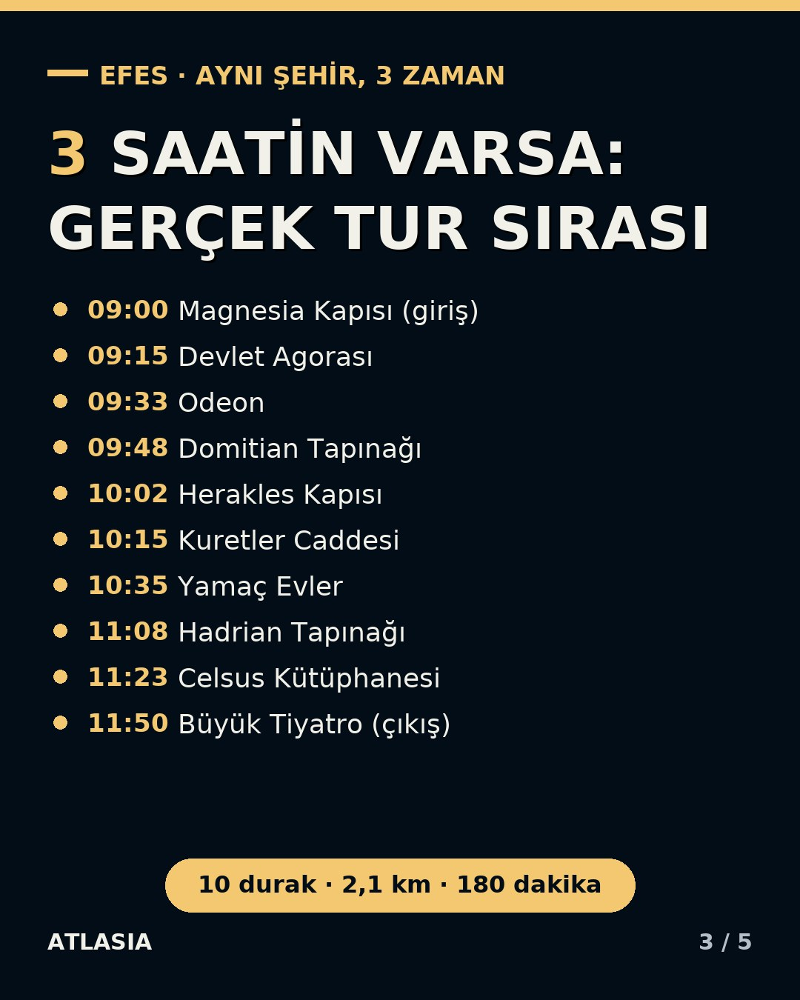
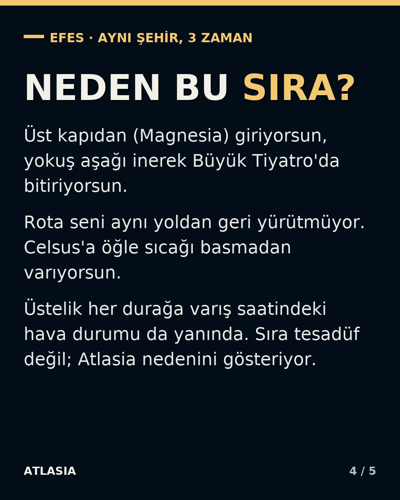
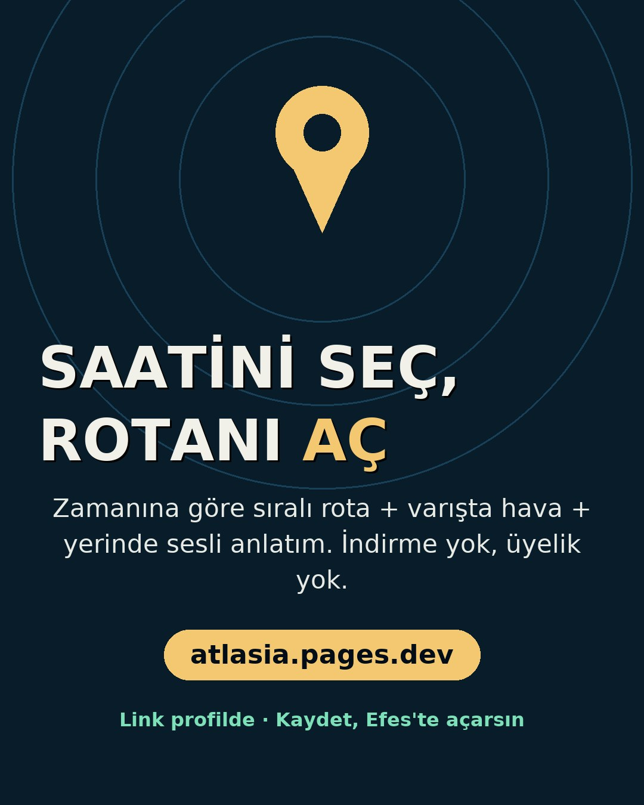
Kısa senaryo
5 slayt: kapak + 1 saat imza üçlü + 3 saat gerçek tur sırası (09.00 Magnesia → 11.50 Büyük Tiyatro, 10 durak/2,1 km) + 'neden bu sıra?' + CTA.
TikTok açıklaması
Efes'te 1 saatin mi var, 3 saatin mi? Plan değişir 🏛️ (kaydet) 1 saat: Celsus → Mermer Cadde → Büyük Tiyatro 3 saat: 09.00 Magnesia Kapısı'ndan gir, yokuş aşağı 10 durak, 11.50 Büyük Tiyatro'da bitir. Tam liste slaytta. Sıra neden böyle? Son slaytta. Rotası profilde 👇 #efes #ephesus #izmir #antikkent #gezi #atlasia
Instagram açıklaması
Efes'te zamanın kaç saat? 🏛️ Planını ona göre veriyoruz — kaydet, kapıda açarsın. ⏱️ 1 saat: imza üçlü (Celsus, Mermer Cadde, Büyük Tiyatro) 🗺️ 3 saat: Atlasia'nın gerçek tur sırası — 10 durak, 2,1 km, 09.00 Magnesia Kapısı → 11.50 Büyük Tiyatro Son slaytta işin sırrı var: neden üst kapıdan girip yokuş aşağı bitiriyorsun? Haritalı, saatli hâli profildeki linkte. İndirme yok. Efes'e daha önce gidenler: hangi durakta en çok oyalandınız? 👇
Hashtag (IG ilk yorum)
#efes #ephesus #efesantikkenti #selçuk #izmir #celsuskütüphanesi #antikkent #tarih #gezi #seyahat #keşfet #atlasia #200metre
Sabit yorum · Story
Yorum: Celsus mu Büyük Tiyatro mu? Efes'in imza karesi sizce hangisi? 📸
Story: Efes'te kaç saatin var? (anket: 1 saat / 3 saat) — planın hazır, yayında
Bağlantılar (UTM)
IG: https://atlasia.pages.dev/?tab=kesfet&utm_source=instagram&utm_medium=carousel&utm_campaign=ayni-sehir-3-zaman&utm_content=efes
TT: https://atlasia.pages.dev/?tab=kesfet&utm_source=tiktok&utm_medium=photo&utm_campaign=ayni-sehir-3-zaman&utm_content=efes
Nereye Gidelim Kavgası
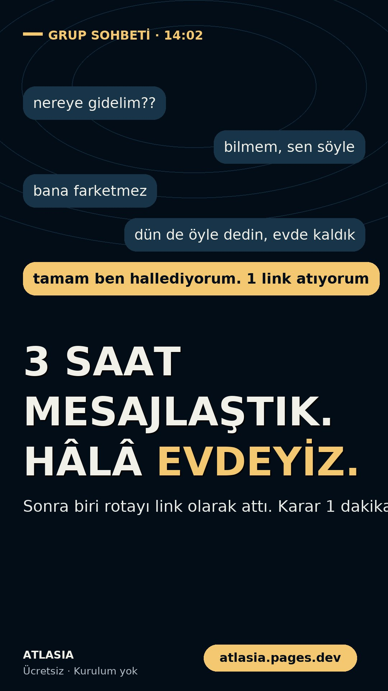
Kısa senaryo
Grup sohbeti hızlı akar (ekran görüntüsü stili) → biri altın baloncukla rota linki atar → kesme: ekip sokakta yürüyor. Son yazı: 'Karar 1 link sürdü.'
TikTok açıklaması
3 saat mesajlaştık. Hâlâ evdeydik. 😭 "nereye gidelim" "sen söyle" "bana fark etmez"... tanıdık geldi mi? Sonunda biri gruba hazır rota linki attı: 3 saat, 7 durak, karar bitti. Grubunuzun "bana fark etmez"cisini etiketleyin 👇 o kişi bu videoyu görmeli #gezi #arkadasgrubu #rota #atlasia #komik #kesfet
Instagram açıklaması
Bu sohbet her hafta sonu yaşanıyor, itiraf edin 😅 3 saat mesajlaşma, sıfır karar, akşam evde çay. Ta ki biri gruba tek link atana kadar: saatlik plan, sıralı duraklar, herkes aynı haritada. Cumartesi planınızı kurtarın: rotayı çiz, linki gruba at, çıkın 🚶 Link profilde. Sizin grupta kararı kim veriyor — etiketle, görevi resmileşsin 👇
Hashtag (IG ilk yorum)
#gezi #haftasonu #arkadaşlar #rota #seyahat #şehirhayatı #keşfet #atlasia #200metre #cumartesi #plan #istanbul
Sabit yorum · Story
Yorum: Etiketlenen kişi bu hafta rotayı çizmek zorunda, kurallar böyle 😎
Story: Bu cumartesi karar kimde? (anket: Ben / Yine ben) 😅 rota linki burada
Bağlantılar (UTM)
IG: https://atlasia.pages.dev/?tab=kesfet&utm_source=instagram&utm_medium=reels&utm_campaign=nereye-gidelim&utm_content=grup
TT: https://atlasia.pages.dev/?tab=kesfet&utm_source=tiktok&utm_medium=video&utm_campaign=nereye-gidelim&utm_content=grup
1 İz Bırak — meydan okuma
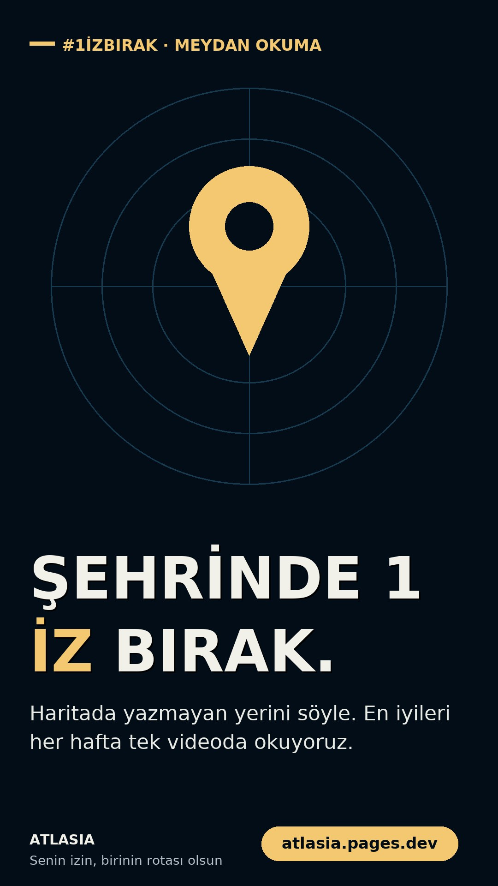
Kısa senaryo
Kurucu/ekip kameraya şehrinde 1 iz bırakır (pin + tek cümle not) → 'sıradaki sen' → her hafta en iyi 3 iz tek videoda okunur.
TikTok açıklaması
Şehrinde haritada yazmayan 1 yeri söyle. Ben başlıyorum 📍 Rehber kitaplarında olmayan, sadece oradan geçenlerin bildiği yerler... Biz ilk izi bıraktık, sıra sende. #1izbirak ile düet yap ya da Atlasia'da pin'ini bırak: en iyi 3 izi her hafta tek videoda okuyoruz. Şehrini yoruma yaz, bakalım hangi şehir daha gizli 👇 #izbirak #gezi #gizliyeler #atlasia #kesfet #sehir
Instagram açıklaması
Meydan okuma başladı: ŞEHRİNDE 1 İZ BIRAK 📍 Haritada yazmayan, rehberde geçmeyen ama "iyi ki gitmişim" dediğin o yer... Tek cümlelik bir notla Atlasia'ya bırak: "Kapıdan girme, sağdan dolan. 10 dk." gibi. Her hafta en iyi 3 izi tek videoda okuyup bırakanları etiketliyoruz 🏅 İlk iz bizden — seninki hangi şehirden olacak? Link profilde (iz bırakma ekranı direkt açılıyor).
Hashtag (IG ilk yorum)
#1izbirak #atlasia #200metre #gezi #kesfet #gizliyerler #şehir #gezgin #seyahat #türkiye #meydanokuma #harita
Sabit yorum · Story
Yorum: Şehrini + yerin tek cümlelik ipucunu yaz 👇 en gizli şehir kapışması başlasın
Story: 1 iz bırak meydan okuması başladı 📍 Şehrinin gizli yerini söyle (soru çıkartması)
Bağlantılar (UTM)
IG: https://atlasia.pages.dev/?tab=iz-birak&utm_source=instagram&utm_medium=reels&utm_campaign=1-iz-birak&utm_content=lansman
TT: https://atlasia.pages.dev/?tab=iz-birak&utm_source=tiktok&utm_medium=video&utm_campaign=1-iz-birak&utm_content=lansman
Evinden 15 Dakika — Galata & Haliç
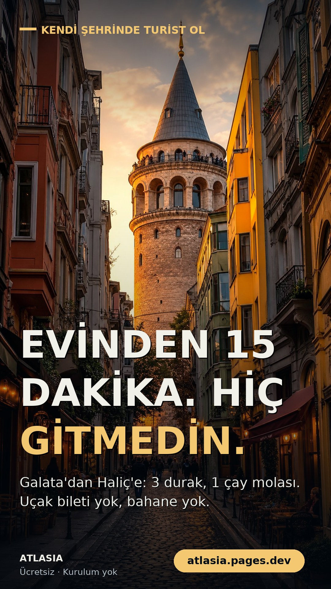
Kısa senaryo
Haritada 15 dakikalık halka → Galata'dan Haliç'e 3 durak hızlı kesme → Karaköy'de çay → kapanış: 'Turist olmana gerek yok. 15 dakikan var.'
TikTok açıklaması
İstanbul'da yaşıyorsun ama bu yürüyüşü hiç yapmadın 🚶 Evinden 15 dakika: Galata'dan Haliç'e bak, Karaköy'de çayını iç, köprüye yürü. Uçak bileti yok, bahane yok. Senin evinden 15 dakika nereye çıkıyor? Yoruma mahalleni yaz, sıradaki bölümü oradan çekelim 👇 #istanbul #galata #karaköy #gezi #atlasia #200metre
Instagram açıklaması
Evinden 15 dakika. Hiç gitmedin. 🚶 Kendi şehrinde turist olma turu: Galata'dan Haliç'e bakış, Karaköy'de bir çay molası, köprüye yürüyüş. 15 dakikalık halkanın içinde koca bir rota varmış — haritası profildeki linkte. Bu pazar deneyip story'de bizi etiketleyenleri paylaşıyoruz 📸 Sıradaki "15 dakika" hangi mahalle olsun? 👇
Hashtag (IG ilk yorum)
#istanbul #galata #galatakulesi #karaköy #haliç #şehir #yürüyüş #gezi #keşfet #atlasia #200metre #haftasonu
Sabit yorum · Story
Yorum: Mahalleni yaz, en çok istenen yer sıradaki 15 dakika bölümü olsun 👇
Story: Bugün 15 dakikan var mı? 🚶 Galata rotası yayında (link çıkartması)
Bağlantılar (UTM)
IG: https://atlasia.pages.dev/?tab=kesfet&utm_source=instagram&utm_medium=reels&utm_campaign=evinden-15dk&utm_content=galata
TT: https://atlasia.pages.dev/?tab=kesfet&utm_source=tiktok&utm_medium=video&utm_campaign=evinden-15dk&utm_content=galata
Altın Saate Yetiş — Pamukkale
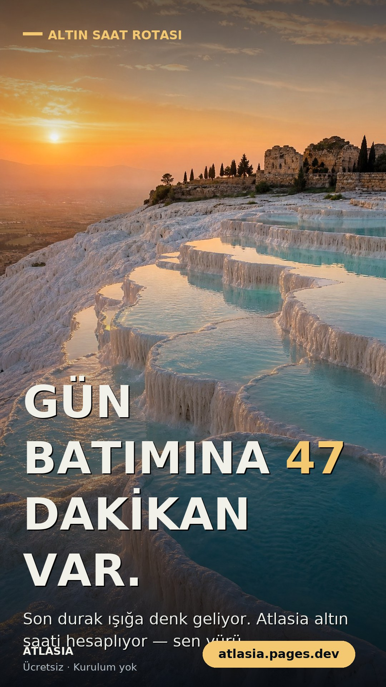
Kısa senaryo
Geri sayım çipi ekranda → rota son durağı altın saate ayarlar → yürüyüş hızlanır → gün batımı karesinde dur. Kapanış: 'Atlasia hesaplıyor, sen yürü.'
TikTok açıklaması
Gün batımına 47 dakikan var. Son durağa yetişir misin? 🌅 Pamukkale'de gün batımında ışık turkuvaza döner — mesele o ana doğru yerde olmak. Atlasia altın saati hesaplayıp rotanın son durağını ışığa denk getiriyor. Sen sadece yürü. Altın saat avcıları: en iyi gün batımı noktanız neresi? 👇 #pamukkale #gunbatimi #altinsaat #gezi #atlasia #fotograf
Instagram açıklaması
Gün batımına 47 dakika 🌅 Fotoğraf aynı yerde çekilir ama ışık her saat aynı olmaz. Atlasia altın saat aralığını hesaplıyor; rotanın son durağını tam o ışığa denk getiriyorsun. Pamukkale'de beyaz, turkuvaz ve altın aynı karede buluşuyor. Bu ışığı kiminle izlemek isterdin? Gönder, plan başlasın ✈️ Haritalı rota profilde.
Hashtag (IG ilk yorum)
#pamukkale #günbatımı #altınsaat #goldenhour #denizlİ #gezi #seyahat #fotoğraf #keşfet #atlasia #200metre #traverten
Sabit yorum · Story
Yorum: Altın saatte en güzel yer sizce neresi? 📸 En iyisini sıradaki bölümde gidiyoruz
Story: Bugün altın saat kaçta biliyor musun? 🌅 (anket: Biliyorum / Atlasia söylesin)
Bağlantılar (UTM)
IG: https://atlasia.pages.dev/?tab=kesfet&utm_source=instagram&utm_medium=reels&utm_campaign=altin-saat&utm_content=pamukkale
TT: https://atlasia.pages.dev/?tab=kesfet&utm_source=tiktok&utm_medium=video&utm_campaign=altin-saat&utm_content=pamukkale
24 Saat İzi — Venedik Cannaregio
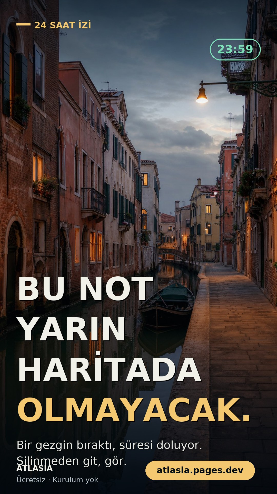
Kısa senaryo
24 saatlik hikâye izi bırakılır (geri sayım çipi) → ipucu okunur → kanal boyu yürüyüş → ertesi gün 'iz silindi' story follow-up'ı ile seri bağlanır.
TikTok açıklaması
Bu not yarın haritada olmayacak ⏳ Bir gezgin Venedik'te 24 saatlik bir iz bıraktı: herkes Rialto'da sıkışırken Cannaregio'ya 40 dakika yürü, kanal aynı kanal kalabalık yok. Atlasia'da bazı izler 24 saat yaşıyor — silinmeden git, gör. Böyle geçici ipuçlarını sever misiniz, kalıcı mı olsun? 👇 #venedik #venice #italya #gezi #atlasia #200metre
Instagram açıklaması
Bu not yarın haritada olmayacak ⏳ Venedik'te bir gezginin bıraktığı 24 saatlik iz: "Herkes Rialto'da sıkışıyor. Cannaregio'ya yürü — 40 dakika, kalabalık yok." Bazı ipuçları kalıcı olmamalı; tam zamanında, tam yerinde güzeller. Atlasia'da 24 saatlik izler var. Süresi dolmadan yakala — link profilde. Kaydet 📌 Venedik planı yapan arkadaşına göndermeyi unutma.
Hashtag (IG ilk yorum)
#venedik #venice #cannaregio #italya #italy #gezi #seyahat #avrupa #keşfet #atlasia #200metre #travelitaly
Sabit yorum · Story
Yorum: 24 saatlik ipucu mu, sonsuza kadar kalan not mu? Tarafını seç 👇
Story: ⏳ Dünün izi silindi. Bugünün izi hangi şehirde olsun? (soru çıkartması)
Bağlantılar (UTM)
IG: https://atlasia.pages.dev/?tab=kesfet&utm_source=instagram&utm_medium=reels&utm_campaign=24-saat-izi&utm_content=venedik
TT: https://atlasia.pages.dev/?tab=kesfet&utm_source=tiktok&utm_medium=video&utm_campaign=24-saat-izi&utm_content=venedik
Detaylı çekim senaryoları: senaryolar.md · Tüm metinler: captions.md · Görselleri yeniden üretmek: python3 render.py